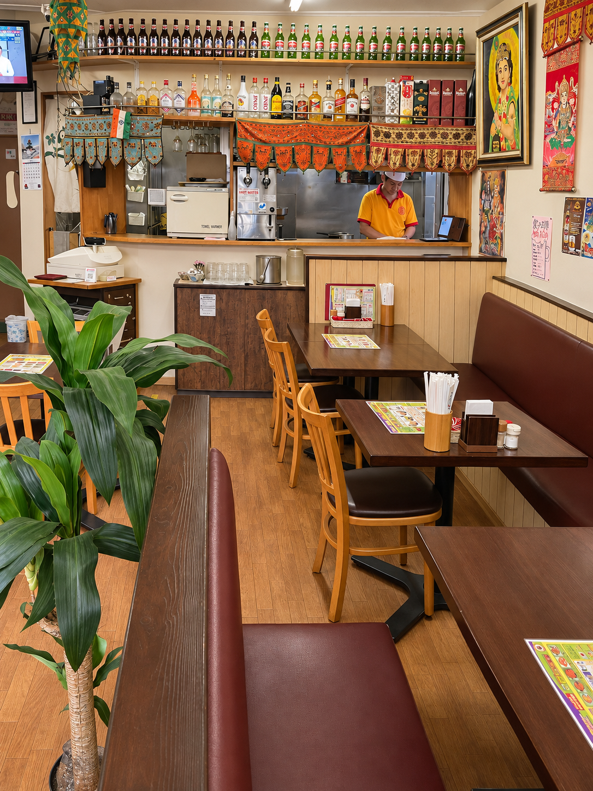

市川・南八幡で、スパイス香るひととき。
アジアンダイニング＆バー DEEPSUNへようこそ。
カレーやナンを囲んで、くつろぎのひとときを。

店舗情報
DEEPSUN（ディープサン）

インド・アジアン料理を身近に
カレーやナンをはじめ、スパイスが香る料理をお楽しみください。
気軽にくつろげる店内
木のテーブルとソファ席で、ランチも夕食もゆっくりお楽しみいただけます。
お店でも、ご自宅でも
店内でのお食事に加え、各種デリバリーサービスからもご注文いただけます。
SNS
DEEPSUNとLINEでつながる
お店のLINEはこちらから。